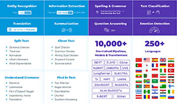

I’m a CTO at John Snow Labs, helping healthcare & life science companies put AI to good use. My interests include natural language processing, applied machine learning, and large scale distributed systems.
Talks
Natural Language Processsing
- State of the Art NLP with Free and Open-Source Software, keynote at the 2nd NLP Summit, October 2021.
- The 2020 Trends for Applied Natural Language Processing, keynote at the 1st NLP Summit, October 2020.
- State of the Art Natural Language Processing at Scale, keynote at AI DevWorld, October 2020.
- Building Complete State-of-the-art Natural Language Processing Projects with Free Software. Scale by the Bay, October 2021.
- Advanced Natural Language Processing with Spark NLP Spark+AI Summit 2020 and Data+AI Summit 2021.
- Natural language understanding at Scale with Spark NLP, Strata Data NYC 2019 and ODSC East 2019.
- Lessons Learned Building AI Systems That Understand Natural Language - Global AI Conference, April 2019
- Spark NLP: Extending Spark ML to Deliver Fast, Scalable, and Unified Natural Language Processing, Spark+AI Summit 2019.
- State of the Art Natural Language Processing at Scale Spark+AI Summit 2018 and ODSC West 2018.
-
Natural Language Understanding at Scale with Spark NLP.
Half-Day Tutorial with Claudiu Branzan and Alex Thomas. Strata New York, September 2018 -
State of the Art Natural Language Processing at Scale.
With Alex Thomas. Spark+AI Summit, San Francisco, June 2018. -
Intelligent, high-accuracy fact extraction from long financial documents.
With Saif Addin Ellafi and Paul Parau, at Strata Data London, May 2018. -
Extending Spark NLP: Training your own deep-learned natural language understanding models.
O'Reilly AI, Beijing, April 2018. -
Natural Language Understanding at Scale on Apache Spark.
Open Data Science Conference, in Boston, May 2018 and San Francisco, November 2018 -
Natural language understanding at scale with spaCy, Spark ML, and TensorFlow.
Half-Day Tutorial with Claudiu Branzan and Alex Thomas. Strata New York, September 2017; Strata California, March 2018; and Strata London, May 2018. - Comparison of Java-based, Python-based and Spark-based Natural Language Processing Libraries.
Open Data Science Conference, Santa Clara, November 2017 -
Semantic Natural Language Understanding at Scale using Spark, Machine Learned Annotators & Deep-Learned Ontologies.
With Claudiu Branzan, at Strata Hadoop San Jose, CA, March 2017 & at Spark Summit East, Boston, MA, February 2017. -
Reading between the lines: Using NLP, machine learning & deep learning algorithms to extract meaning from text.
Global AI Conference, Santa Clara, CA, January 2017. - Natural language understanding pipelines: From keywords & grammar to inference & prediction.
US Data Science Summit, in San Francisco, CA, July 2016. Semantic natural language understanding with Spark Streaming, UIMA & machine learned ontologies.
With Claudiu Branzan, at Strata + Hadoop World, in London, May 2016 & in New York, September 2016.
NLP in Healthcare
- Advancing the State of the Art in Applied Natural Language Processing. Keynote at the Healthcare NLP Summit 2021.
- Automating Clinical Data Abstraction From Unstructured Documents Using Spark NLP. Ai4 Healthcare Summit, May 2021.
- State of the art Clinical and Biomedical Natural Language Processing. Nvidia GTC 2021.
- Lessons Learned Applying Natural Language Processing for Healthcare AI. Global Big Data Conference, Sep 2020.
- Automated and Explainable Deep Learning for Clinical Language Understanding at Roche. Spark+AI Summit, June 2020
- Applying state-of-the-art natural language processing for personalized healthcare. ODSC East 2020 and Ai4Healthcare 2020.
- Start Of The Art Natural Language Understanding In Healthcare. Global Big Data Conference, August 2018.
- Natural Language Understanding in Healthcare: State of the Art NLP, Machine Learning & Deep Learning with Open Source Software.
Prediction Analytics World Healthcare, in Las Vegas, Nevada, June 2018.
Data Science in Production
- Model Governance: A Checklist for Getting AI Safely to Production ODSC Europe 2020 and ODSC Europe 2021.
- What to Expect When You Are Putting AI in Production? - ODSC East 2019
- Executive Briefing: Why machine-learned models crash and burn in production and what to do about it – at Strata Data NYC 2019, ODSC East 2019, and Strata Data London 2018.
- When models go rogue: Hard earned lessons about using machine learning in production, 3rd Data Science Summit Europe, May 2017
-
Executive Briefing: Why machine-learned models crash and burn in production and what to do about it.
Strata Data Conference, in London, May 2018 and New York, September 2018. -
Executive Briefing: What you must know to build AI systems that understand natural language.
O'Reilly AI, in San Francisco, September 2018. -
When models go rogue: Hard earned lessons on using machine learning in production.
Strata Data Conference, in London, May 2017; New York, September 2017; and San Jose, March 2018. - Machine learning in production: Lessons from the field.
At the Big Data, Analytics & Machine Learning Israeli Innovation Conference, in Ramat Gan, Israel, May 2015. -
Concept Drift, A/B Testing, Online Measurement, Adversaries & Other Risks when Operating Data Science Models.
Global Data Science Conference, Santa Clara, CA, March 2017. - Engineering Management for Data Science Systems & Teams: Battle-Tested Best Practices.
Enterprise Data World, in San Diego, CA, April 2016. - Lessons learned productizing data science: Software Development vs. Model Development Best Practices.
Big Data for Executives, in Santa Clara, CA, March 2016.
Data Driven Healthcare
- O’Reilly AI Superstream, March 2021.
-
How SelectData uses AI to better understand home health patients.
With Alberto Andreotti, Stacy Ashworth and Tawny Nichols. Strata Data Conference, New York, September 2018. -
Improving patient flow forecasting at Kaiser Permanente.
With Santosh Kulkarni. Strata Data Conference, in San Jose, California, March 2018. - Clinical natural language understanding at scale.
EU Data Science Summit, in Tel Aviv, Israel, June 2016. - Moving Beyond Templates and Coercion to Improve Physician Documentation.
With Jill Wolf, at the 23rd Annual WEDI National Conference, in Hollywood, CA, May 2014. - Data driven approach to revenue capture process improvement.
With Gene Boerger, at the AHIMA 85th Convention, in Atlanta, GA, October 2013. - Data driven models to minimize hospital readmissions.
With Miriam Paramore, at the 2013 Strata Rx Conference, in Boston, MA, September 2013.
AI Platform Architecture
-
How to build an open source data science platform.
Half-day tutorial at TDWI Anaheim, California, August 2018. - Building a new predictive model & API in 30 minutes.
With Claudiu Barbura, at PAPIs.io — The Predictive APIs and Apps Conference, in Barcelona, Spain, November 2014. - Building an intelligent big data app in 30 minutes.
With Claudiu Barbura, at the Strata Barcelona Conference, in Barcelona, Spain, November 2014. - Lessons Learned from Embedding Cassandra in an enterprise-grade big data platform.
With Claudiu Barbura, at Cassandra Day Seattle, in Bellevue, WA, July 2014. - Leveraging a big data infrastructure to accelerate the data science workflow.
At the 5th Timisoara Big Data Meetup, in Timisoara, Romania, June 2014.
Machine Learning for Fraud Detection
-
Hunting Criminals with Hybrid Analytics.
At Data by the Bay, San Francisco, May 2017; Global Data Science Conference 2016, in Santa Clara, CA, March 2016; and IBM Datapalooza, in Seattle, WA, February 2016. -
Architecting a predictive, petabyte-scale, self-learning fraud detection system.
Global Predictive Analytics Conference, Santa Clara, CA, March 2017. - Online Predictive Modeling of Fraud Schemes from Multiple Live Streams.
With Claudiu Branzan, at Spark Summit East, in New York, NY, February 2016. - Online fraud detection: A reference architecture for adversarial learning.
At MLConf Atlanta, in Atlanta, GA, September 2015. - Hunting Criminals with Hybrid Analytics, Semi-supervised Learning & Agent Feedback.
With Claudiu Branzan, At the Smart Data Conference, in San Jose, CA, August 2015 & at at Strata + Hadoop World, in London, UK, May 2015. - Active learning from streams of graph, language & time series signals.
With Claudiu Branzan, At the Data Science Summit & Dato Conference, in San Francisco, CA, July 2015.
Research
Natural Language Processing in Healthcare
- Hasham Ul Haw, Veysel Kocaman and David Talby, “Deeper Clinical Document Understanding Using Relation Extraction”. SDU (Scientific Document Understanding) workshop at AAAI 2022.
- Veysel Kocaman and David Talby, “Spark NLP: Natural Language Understanding at Scale”. Software Impacts, January 2021.
- Veysel Kocaman and David Talby, “Biomedical Named Entity Recognition at Scale”. CADL 2020 (International Workshop on Computational Aspects of Deep Learning) at ICPR 2020.
- Veysel Kocaman and David Talby, “Improving Clinical Document Understanding on COVID-19 Research with Spark NLP”. SDU (Scientific Document Understanding) workshop at AAAI 2021.
Parallel Computer Scheduling & Workload Modeling
- David Talby, User Modeling of Parallel Workloads: Predicting and Optimizing the Use of Parallel Computers, VDM Verlag Publishing, 2009.
- David Talby, Dror G. Feitelson and Adi Raveh, "A Co-Plot Analysis of Logs and Models of Parallel Workloads". ACM Transactions on Modeling and Computer Simulation, vol. 12 no. 3 art. 12, July 2007. ©Copyright 2007 by ACM, Inc. Definitive version available from the ACM Digital Library.
- David Talby, Dan Tsafrir, Zviki Goldberg and Dror G. Feitelson, "Session-Based, Estimation-less, and Information-less Runtime Prediction Algorithms for Parallel and Grid Job Scheduling". Technical Report 2006-77, School of Computer Science and Engineering, The Hebrew University of Jerusalem, August 2006.
- Julia Zilber, Ofer Amit and David Talby, "What is Worth Learning from Parallel Workloads? A User and Session Based Analysis". International Conference on Supercomputing 2005 (ICS '05), June 2005.
- David Talby and Dror G. Feitelson, "Improving and Stabilizing Parallel Computer Performance Using Adaptive Backfilling". 19th Intl. Parallel & Distributed Processing Symposium (IPDPS '05).
- David Talby and Dror G. Feitelson, "Supporting Priorities and Improving Utilization of the IBM SP2 Scheduler Using Slack-Based Backfillingquot;. In 13th Intl. Parallel Processing Symp., pp. 513-517, April 1999. ©Copyright 1999 by IEEE. Definitive version available from the IEEE Computer Society Digital Library. Also available as a more detailed technical report.
- David Talby, Dror G. Feitelson, and Adi Raveh, "Comparing Logs and Models of Parallel Workloads Using the Coplot Method". In Job Scheduling Strategies for Parallel Processing, pp. 43-66, Springer-Verlag, 1999. Lecture Notes in Computer Science Vol. 1659. ©Copyright 1999 by Springer-Verlag. Definitive version available from Springer LINK.
- S. J. Chapin, W. Cirne, D. G. Feitelson, J. P. Jones, S. T. Leutenegger, U. Schwiegelshohn, W. Smith, and D. Talby, "Benchmarks and Standards for the Evaluation of Parallel Job Schedulers". In Job Scheduling Strategies for Parallel Processing, pp. 67-90, Springer-Verlag, 1999. Lecture Notes in Computer Science Vol. 1659. ©Copyright 1999 by Springer-Verlag. Definitive version available from Springer LINK.
Agile Software Development
- David Talby and Yael Dubinsky, "Governance of an Agile Software Project". 2nd ICSE Workshop on Software Development Governance (SDG 2009), May 2009.
- Yael Dubinsky, Orit Hazzan, David Talby and Arie Keren. "Transition to Agile Software Development in a Large-Scale Project: A Systems Analysis and Design Perspective". In the Advances in Management Information Systems (AMIS) Monograph Series, 2008.
- David Talby, Lessons Learned from Scaling XP. Software Practice Advancement 2007, Cambridge, UK, March 2007.
- David Talby, Orit Hazzan, Yael Dubinsky and Arie Keren, "Agile Software Testing in a Large-Scale Project". IEEE Software, Special issue on Software Testing - Jul/Aug 2006. ©Copyright 2006 by IEEE. Definitive version available from the IEEE Computer Society Digital Library.
- David Talby, Orit Hazzan, Yael Dubinsky and Arie Keren, "Reflections on Reflection in Agile Software Development". Agile 2006 Conference, July 2006.
- Yael Dubinsky, Orit Hazzan, David Talby and Arie Keren, "System Analysis And Design in a Large-Scale Software Project: The Case of Transition to Agile Development". 8th International Conference on Enterprise Information Systems (ICEIS 2006), May 2006.
- Yael Dubinsky, David Talby, Orit Hazzan and Arie Keren, "Agile Metrics at the Israeli Air Force". Agile 2005 Conference, Denver, Colorado, July 2005.
Model Driven Software Engineering
- David Talby, "The Perceived Value of Authoring and Automating Acceptance Tests Using a Model Driven Development Toolset". Fourth International Workshop on the Automation of Software Test (AST’09), May 2009.
- David Talby, Enterprise-Scale Model Driven Development: Challenges after the initial adoption. Code Generation 2007, Cambridge, UK, May 2007.
- David Talby, Model Driven Testing: Growing your own solution. Code Generation 2007, Cambridge, UK, May 2007.
- David Talby, Ori Nakar, Noam Shmueli, Eli Margolin and Arie Keren, "A Process-Complete Automatic Acceptance Testing Framework". In Proc. of 2005 IEEE Intl. Conference on Software - Science, Technology and Engineering (SwSTE '05), February 2005. ©Copyright 2005 by IEEE. Definitive version available from the IEEE Computer Society Digital Library.
- David Talby, Dotan Adler, Yair Kedem, Ori Nakar, Noa Danon and Arie Keren, "The Design and Implementation of a Metadata Repository". In Proc. of Intl. Council on Systems Engineering Israeli chapter conference, March 2002.
Patents
Healthcare
- Rodney Kinney, Michael Sandoval, Jonathan Cross, Bryan Tinsley, Manjula Iyer and David Talby, "Automatic generation of evaluation and management medical codes". Patent publication number US 20150039344 A1, filed in 2014.
- Vishnu Vettrival, Penny Yee, Michael Sandoval and David Talby,
"Automated system for handling files containing protected health information".
Patent publication number US 20160063187 A1, filed in 2015. - Rodney Kinney, Michael Sandoval, David Talby, Robert Payne, Bryan Tinsley and Alex Thomas, "Methods and systems for medical auto-coding using multiple agents with automatic adjustment". Patent publication number WO 2014046707 A1, filed in 2013.
- Rodney Kinney, Michael Sandoval, David Talby, Gunjan Gupta and Manjula Iyer, "Methods and automated systems that assign medical codes to electronic medical records". Patent publication number WO 2014047051 A1, filed in 2013.
Data Science
- Jose Alberto Pablo Andreotti and David Talby, “Preprocessing images for OCR using character pixel height estimation and cycle generative adversarial networks for better character recognition”, patent publication number US 11176410 B2, granted 2021.
- Wolf Kohn, Michael Sandoval, Vishnu Vettrivel, Jonathan Cross, Jason Knox, David Talby and Mike Lazarus,
"Cooperative distributed control of target systems".
Patent publication number WO 2016025080 A1, filed in 2015. - Wolf Kohn, Michael Sandoval, Vishnu Vettrivel, Jonathan Cross, Jason Knox, David Talby and Mike Lazarus,
"Determining control actions of decision modules".
Patent publication number WO 2016025080 A1, filed in 2015. - Gunjan Gupta, Aman Thakral, John Morris, Robert Payne, Michael Sandoval and David Talby, "Automated experimentation platform". Patent publication number WO 2015095411 A1, filed in 2014.
- Gunjan Gupta, Wolf Kohn, Robert Payne, Aman Thakral, Michael Sandoval and David Talby, "Method and system for estimating values derived from large data sets based on values calculated from smaller data sets". Patent publication number WO 2015095405 A4, filed in 2014.
- Radu Bisca, Michael Sandoval, Claudiu Barbura, Wolf Kohn and David Talby, "Method and system for searching and analyzing large numbers of electronic documents". Patent publication number US 20140250377 A1, filed in 2014.
- Zhimin Chen, Eduardo Laureano, Renfei Luo, Tsheko Mutungu, Vivek Narasayya and David Talby, "Dictionary for hierarchical attributes from catalog items". Patent publication number US 8606788 B2, filed in 2011 and granted in 2013.
Software Engineering
- David Talby and Scott McMaster, "Dynamic model based software application development". Patent publication number US 8949772 B1, filed in 2009 and granted in 2015.
- Dan Tsafrir, Yoav Etsman, David Talby and Dror G. Feitelson, "System and method for backfilling with system-generated predictions rather than user runtime estimates". Patent publication number US 8261283 B2, filed in 2006 and granted in 2012.
Software

Spark NLPJohn Snow Labs' Spark NLP is an open source text processing library for Python, Java, and Scala. It provides production-grade, scalable, and trainable versions of the latest research in natural language processing. |
Healthcare NLPA statistical analysis tool, tailored for datasets with few observations and many variables which may be intercorrelated. Co-Plot enables visually analysing observations, variables and the correlations between them together. |
Parallel Workload AnalyserA tool for analysing parallel computer workloads in standard workload format. Computes self-similarity, auto-correlation, distributions, time series, per-month and summary statistics. |
Courses
Software Design
Computer Science
Software Engineering Management
- Software Team Leaders Workshop
- The Industrial Survey
- Marketing
Groups
John Snow LabsJohn Snow Labs, an AI and NLP for healthcare company, provides state-of-the-art software, models, and data to help healthcare and life science organizations build, deploy, and operate AI projects. |
Pacific AIPacific AI provides consulting CTO services for high-growth software companies, specializing in applying AI, big data and data science. I conduct technology due diligence, board reviews and AI strategy & architecture workshops. An elite team of data scientists, data engineers and data researchers delivers complete projects. |
Forbes Technology CouncilI'm a member of the Forbes Technology Council, an invitation-only community for CIOs, CTOs and technology executives. It's a curated network of successful peers, provides access to a variety of benefits and resources, and includes the opportunity to submit thought leadership articles and short tips on industry-related topics for publishing on Forbes.com. |
Data Science in HealthcareI started and run the Linkedin group for data science in healthcare. Doing my best to keep an open, evidence based and vendor neutral discussion, focused on recent research results and field case studies. |